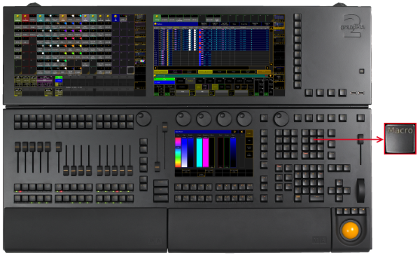
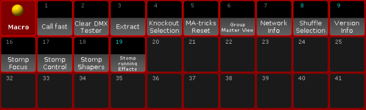

Macro Key
The key Macro is located in the command area on the right of the key Page.

Location key Macro
[Channel]> Macro
[Channel]> Timecode
- Pressing Macro Macro Macro enters the Agenda keyword into the command line.
[Channel]> Agenda
- Pressing and holding
 + Macro enters the Timer keyword into the command line.
+ Macro enters the Timer keyword into the command line.
[Channel]> Timer
- Pressing and holding + Macro Macro enters the Plugin keyword into the command line.
[Channel]> Plugin
- Pressing and holding List + Macro temporarily opens the Macro Pool on screen 2 (except for grandMA2 onPC without MA onPC wing).

Temporary Macro Pool